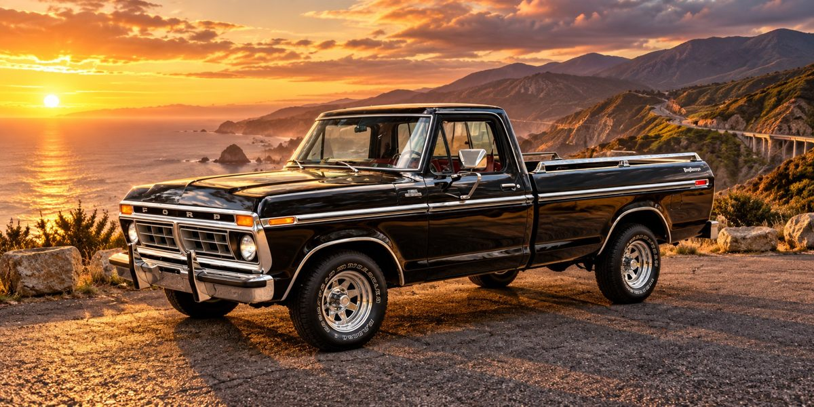

TisZod / Personal workspace
Garage
Everything you drive, ride, tow, or maintain — organized in one place.

Vehicles
Your cars, trucks, motorcycles, and other vehicles take center stage. Open the full vehicle collection to see each vehicle's own photos, details, mileage, registration, inspections, maintenance, and documents.
Your existing individual vehicle cards, pictures, records, and editing tools remain in their original modules. This page brings the sections together without replacing their data.